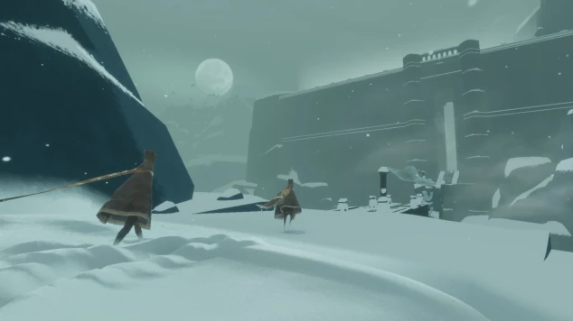

Journey

Released on PlayStation 3 by thatgamecompany in 2012. Played on Windows 10 in 2022.
The slow-paced opening scenes, alternately trudging up and then surfing down sunbaked desert dunes, failed to sustain Zander's interest, so I ended up playing through its short runtime by myself.
In some ways it's an indictment of videogame culture that ten years later it still feels so fresh and radical to pair players up with another internet rando, while giving them no means to communicate or interact other than helping each other out, either leading by example, or exchanging wordless shouts. It seems like a pretty limited repertoire at first. I'm half tempted to just wander off ahead, alone, into the endless desert.
Then, you realize that standing close enough together recharges each other's magical flying scarves. Suddenly, it's enough. You cling to each other for dear life through the howling storms, double back to rescue each other from prowling beasts, and then fly exuberantly above the sunlit clouds, forever curving back to seek each other's life-giving sustenance.
I don't know who the two internet randos were, with whom I shared the first and second halves of my journey. But in those minutes together, we lived a lifetime's worth.